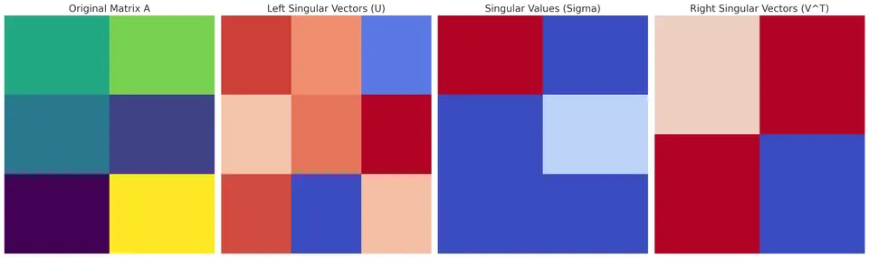

Singular Value Decomposition (SVD)
Singular value decomposition (SVD) expresses a matrix as orthogonal or unitary coordinate changes surrounding a rectangular diagonal scaling. It exists for every real or complex matrix, including rectangular and rank-deficient matrices, whereas a diagonal eigenvalue decomposition requires a diagonalizable square matrix. The singular values quantify how strongly the transformation acts along paired input and output directions. This makes SVD useful for dimensionality reduction, noise filtering, image compression, and least-squares problems, particularly when rank or conditioning is uncertain. The factorization separates these questions into explicit quantities: the positive singular values describe the nonzero action of the matrix, and zero singular values identify directions that it maps to zero.

Mathematical formulation
Given any $m \times n$ matrix $A$, the SVD factorizes $A$ into:
$$ A = U \Sigma V^{T} $$
where:
I. $U$ is an $m \times m$ orthogonal matrix (i.e., $U^{T}U = I$). Its columns are called the left singular vectors of $A$.
II. $\Sigma$ (Sigma) is an $m \times n$ diagonal matrix with non-negative real numbers on the diagonal. These numbers $\sigma_1 \geq \sigma_2 \geq \cdots \geq \sigma_p \geq 0$ (where $p = \min(m,n)$) are called the singular values of $A$.
III. $V$ is an $n \times n$ orthogonal matrix (i.e., $V^{T}V = I$). Its columns are called the right singular vectors of $A$.
Putting it together:
$$ A = U \begin{bmatrix} \sigma_1 & 0 & \cdots & 0 \\ 0 & \sigma_2 & \cdots & 0 \\ \vdots & \vdots & \ddots & \vdots \\ 0 & 0 & \cdots & \sigma_p \\ \vdots & \vdots & & \vdots \\ 0 & 0 & \cdots & 0 \end{bmatrix} V^{T} $$
Here, $\Sigma$ is rectangular diagonal: $\Sigma_{ii}=\sigma_i$ for $i\leq p$, with all other entries zero. The displayed zero-row padding is schematic for a tall matrix; a wide matrix instead has zero columns beyond its $p\times p$ diagonal block. Its complete shape is always $m\times n$. The rank of $A$ is the number of positive singular values.
Derivation
The SVD is closely related to the eigenvalue decompositions of the matrices $A^{T}A$ and $AA^{T}$. Both $A^{T}A$ and $AA^{T}$ are symmetric, positive semi-definite matrices, and thus have non-negative real eigenvalues.
Step 1. Compute the eigenvalues of $A^{T}A$. These eigenvalues $\lambda_i$ are non-negative.
II. The singular values of $A$ are defined as $\sigma_i = \sqrt{\lambda_i}$.
III. The eigenvectors of $A^{T}A$ form the columns of $V$, and the eigenvectors of $AA^{T}$ form the columns of $U$ (with signs chosen consistently, e.g. $u_i = A v_i / \sigma_i$).
Since every real matrix $A$ gives rise to a non-negative, symmetric matrix $A^{T}A$, and since such matrices are always diagonalizable, SVD is guaranteed to exist for any matrix $A$.
Completing the derivation and handling rank deficiency
Choose orthonormal eigenvectors $v_i$ of $A^\top A$. For each $\sigma_i>0$, define $u_i=Av_i/\sigma_i$. Then
$$ u_i^\top u_j=\frac{v_i^\top A^\top Av_j}{\sigma_i\sigma_j}=\frac{\sigma_j^2v_i^\top v_j}{\sigma_i\sigma_j}=\delta_{ij}. $$
Thus the constructed left singular vectors are orthonormal. If $\sigma_i=0$, then $\|Av_i\|_2^2=v_i^\top A^\top Av_i=0$, so $Av_i=0$; division by $\sigma_i$ is unnecessary and invalid. Complete the available orthonormal columns to form the full factors. For rank $r$, the same decomposition can be written without unused columns as
$$ A=U_r\Sigma_rV_r^\top=\sum_{i=1}^r\sigma_i u_iv_i^\top, $$
where $U_r$ is $m\times r$, $\Sigma_r$ is $r\times r$, and $V_r$ is $n\times r$. For complex matrices, replace transposes by conjugate transposes.
The Gram-matrix construction below explains existence and is suitable for hand calculations, but is not the preferred general numerical algorithm: forming $A^\top A$ squares the nonzero singular-value condition ratio and can lose information about small singular values. Production SVD methods work with $A$ through orthogonal transformations, typically reducing it to bidiagonal form.
The pseudoinverse is $A^+=V_r\Sigma_r^{-1}U_r^\top$ and gives the minimum-norm least-squares solution $A^+b$. Keeping only the largest $k$ singular values yields $A_k=\sum_{i=1}^k\sigma_i u_iv_i^\top$, with $\|A-A_k\|_2=\sigma_{k+1}$ when $k<r$. This quantifies the compression error rather than assuming that every small singular value is noise.
Algorithm steps
Step 1: Form $A^{T}A$.
Compute the $n \times n$ matrix $A^{T}A$.
Step 2: Compute eigenvalues and eigenvectors of $A^{T}A$.
Solve $(A^{T}A) v = \lambda v$ to find all eigenvalues $\lambda_i \ge 0$ and corresponding eigenvectors $v_i$.
Step 3: Obtain singular values.
Sort the eigenvalues in decreasing order and take $\sigma_i = \sqrt{\lambda_i}$. These form the diagonal entries of $\Sigma$.
Step 4: Form $V$.
The eigenvectors $v_i$ of $A^{T}A$ are arranged as columns to form the matrix $V$.
Step 5: Form $U$.
Similarly, find the eigenvectors of $AA^{T}$ use $u_i=Av_i/\sigma_i$ for each positive singular value. Complete these columns to an orthonormal basis to obtain the full $U$. A rectangular or rank-deficient $\Sigma$ has no ordinary matrix inverse.
Step 6: Assemble the SVD.
With $U, \Sigma, V$ computed, $A = U \Sigma V^{T}$.
Example
Consider the $2 \times 2$ matrix:
$$ A = \begin{bmatrix}3 & 4 \\ 2 & 1\end{bmatrix}. $$
Step 1. Compute $A^{T}A$:
$$ A^{T}A = \begin{bmatrix} 3 & 2 \\ 4 & 1 \end{bmatrix}\begin{bmatrix}3 & 4 \\ 2 & 1\end{bmatrix} = \begin{bmatrix}13 & 14 \\ 14 & 17\end{bmatrix}. $$
Step 2. Find the eigenvalues of $A^{T}A$:
Solve $\det(A^{T}A - \lambda I) = 0$:
$$ (13 - \lambda)(17 - \lambda) - 14^2 = \lambda^2 - 30\lambda + 25 = 0. $$
Solving yields $\lambda_1 = 15 + 10\sqrt{2} \approx 29.1421$ and $\lambda_2 = 15 - 10\sqrt{2} \approx 0.8579$.
III. Singular values:
$$ \sigma_1 = \sqrt{\lambda_1} \approx 5.3983, \quad \sigma_2 = \sqrt{\lambda_2} \approx 0.9262. $$
(Check: $\sigma_1 \sigma_2 = |\det A| = 5$.)
IV. Eigenvectors of $A^{T}A$ (normalized):
$$ v_1 \approx \begin{bmatrix}0.6552 \\ 0.7555\end{bmatrix}, \quad v_2 \approx \begin{bmatrix}-0.7555 \\ 0.6552\end{bmatrix}. $$
Hence:
$$ V \approx \begin{bmatrix}0.6552 & -0.7555 \\ 0.7555 & 0.6552\end{bmatrix}. $$
V. To find $U$, use $u_i = \frac{1}{\sigma_i} A v_i$ for the non-zero singular values:
$$ u_1 \approx \begin{bmatrix}0.9239 \\ 0.3827\end{bmatrix}, \quad u_2 \approx \begin{bmatrix}0.3827 \\ -0.9239\end{bmatrix}, $$
so
$$ U \approx \begin{bmatrix}0.9239 & 0.3827 \\ 0.3827 & -0.9239\end{bmatrix}. $$
Step 6. Assemble SVD:
$$ \Sigma \approx \begin{bmatrix}5.3983 & 0 \\ 0 & 0.9262\end{bmatrix} $$
$$ A = U \Sigma V^{T}. $$
Advantages
I. Universality:
SVD exists for any $m \times n$ matrix $A$, regardless of its rank, making it more broadly applicable than EVD.
II. Noise Reduction and Compression:
By truncating small singular values, one can achieve low-rank approximations of $A$ that are close to the original but simpler, useful in data compression and de-noising.
III. Numerical Stability:
SVD is numerically stable and widely used in robust numerical methods, e.g., pseudo-inverse computations and solving least-squares problems.
Limitations
I. Computational Complexity:
Computing an SVD is often more computationally expensive than eigenvalue decomposition for large square matrices. Efficient algorithms exist, but the cost can still be significant for very large datasets.
II. Interpretation of Factors:
While the decomposition yields orthogonal factors and non-negative singular values, interpreting the physical or application-specific meaning of these components may require additional insight.
III. No Direct Eigenvalue Information of Original A:
The singular values are related to the eigenvalues of $A^{T}A$ (or $AA^{T}$), not directly to the eigenvalues of $A$ itself. For a normal matrix, including a real symmetric matrix, the singular values equal the magnitudes of its eigenvalues. They still do not determine the signs or complex phases of those eigenvalues. For example, $\operatorname{diag}(2,1)$ and $\operatorname{diag}(-2,1)$ have the same singular values but different eigenvalues. The eigenvalue problem and singular-value problem therefore retain distinct information even in this special case.